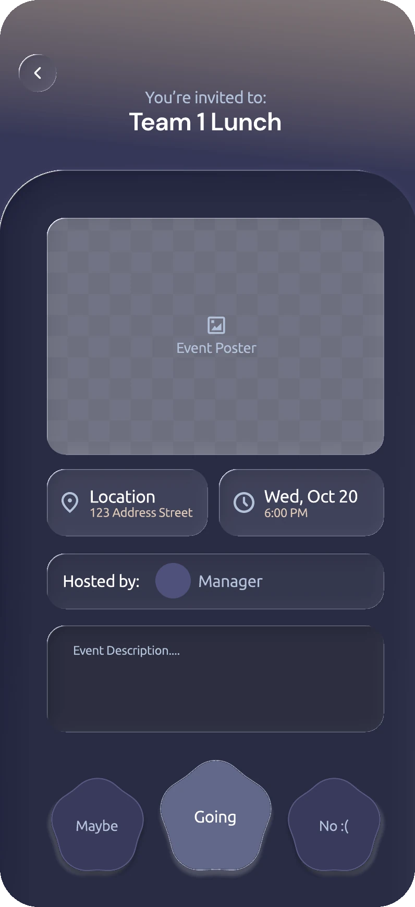
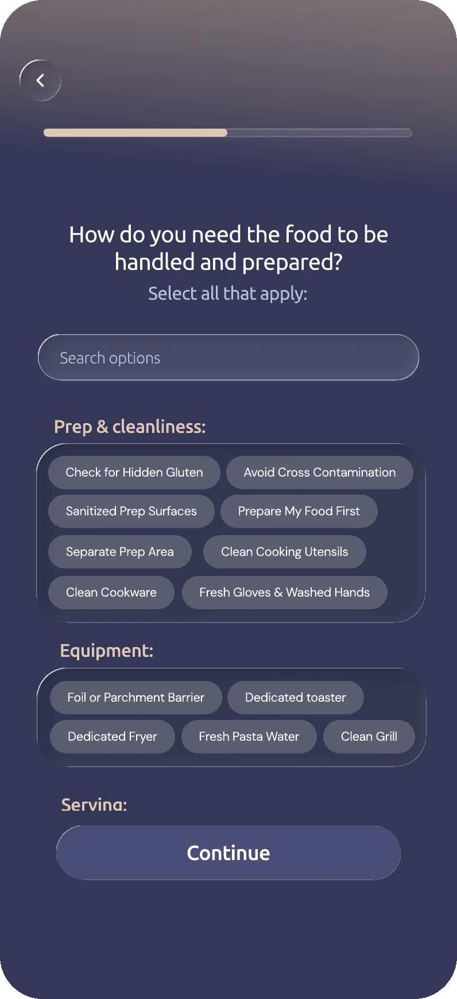
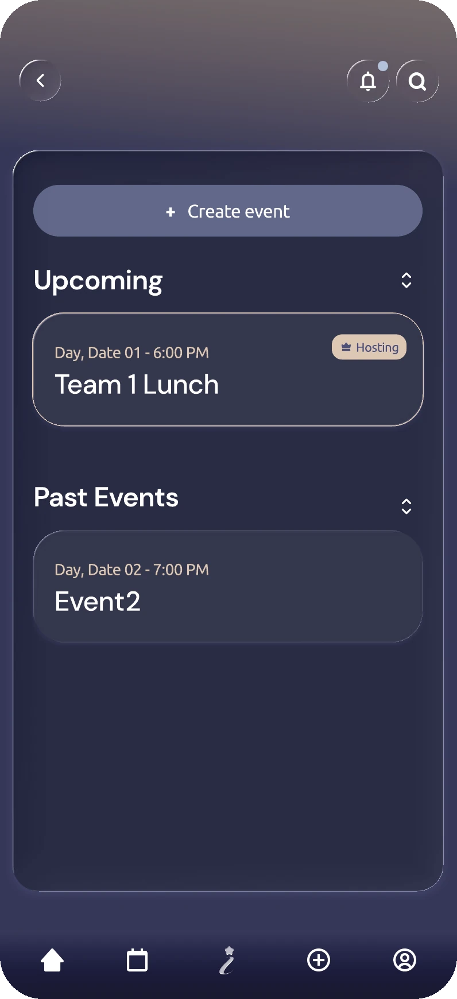
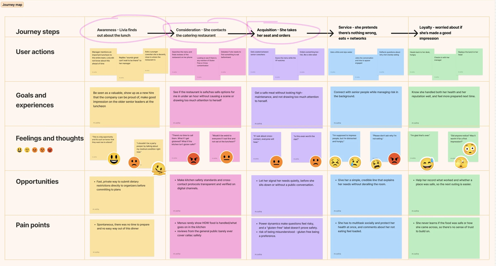
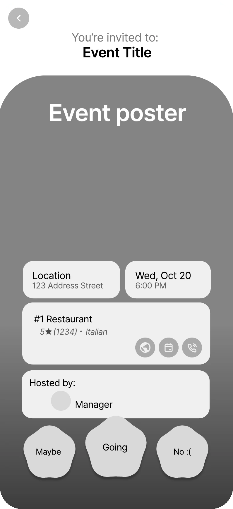
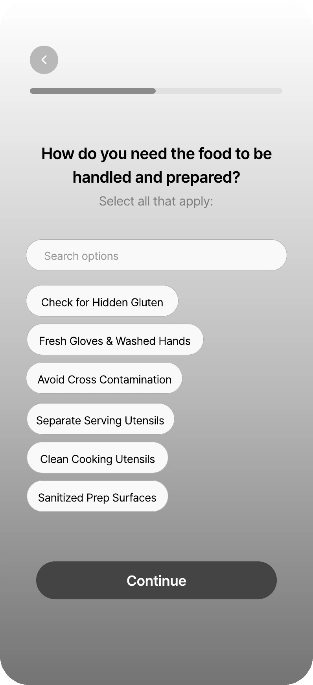
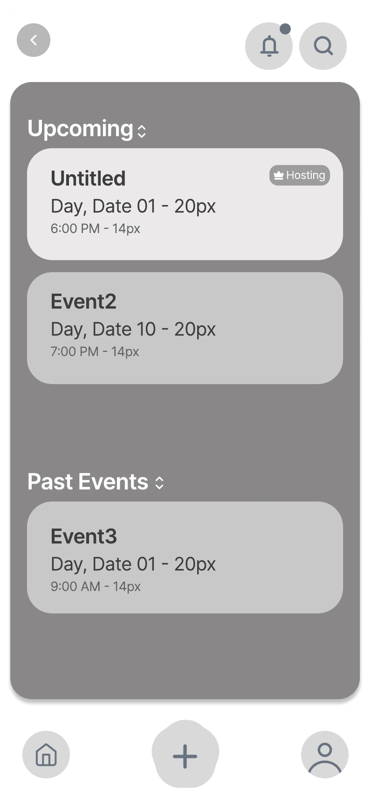

invetty
an app for event goers with celiac disease



the final design00 · intro
Design Question
01 · research
What we needed to learn
Eating safely with celiac disease takes work before the meal starts, and the social and emotional cost is as heavy as the physical risk. To understand both sides, we spoke with people who live with it, as well as allergists and dieticians who work with celiac disease patients of all ages.
key finding 1
- Vetting falls on the person with celiac
- They interrogate waiters, read every label, pre-plan trips, and rarely trust anyone’s kitchen.
key finding 2
- The cost is social, not just physical
- Eating differently from peers feels lonely, and people read celiac as a “preference” or “attention.”
“There’s definitely a lot of stress and anxiety every single time I go to a new restaurant.” (P1)
P1, Celiac Disease Patient“Everybody is concerned about gluten contamination, everybody.” (P3)
P3, Celiac Disease specialist02 · define
Synthesizing our research
Eating safely with celiac disease takes work before the meal starts, and the social and emotional cost is as heavy as the physical risk. We spoke with people who live with it and people who treat it.
Livia
Mid-20s · Missouri · Newly Employed · Diagnosed with Celiac Disease at 14
scenario
Livia has just started her first corporate job. Her manager invites her to a team luncheon where senior leaders will also be attending. It is a valuable chance to build connections and make a good first impression, and this is a hard event to miss.
However, Livia has Celiac Disease, meaning she cannot just choose whatever is on the menu. She has little time to research the restaurant, isn’t sure whether its gluten-free options are truly safe, and feels uncomfortable drawing attention to her dietary restrictions in front of new colleagues.
how might we
How might we make it easier for friends to do the quiet prep work, like sending a menu ahead, without the person having to ask for it?
conflicts
- Food Safety
- How can she make sure her gluten-free needs are properly heard, and that her food is served according to her very specific needs?
- Social Pressure
- Can she communicate her needs without feeling singled out or creating an awkward moment?

hover to zoom in03 · ideate
The Concept
We compared three concepts and chose “What’s Not Good” (which became invetty). It scored highest, and the scores lined up with what we heard in research.
the concept
Inspired by the When’s Good website, a platform where people attending an event share their dietary restrictions and food preparation needs in advance. Each guest gets a link to select foods, ingredients or preparation methods that don’t work for them, including cross-contamination, shared utensils and cooking surfaces. Unsuitable options are filtered out, leaving the organizer with a list that works for everyone. The form stays completely anonymous, so anyone who feels embarrassed to speak up can do so safely.Less anxiety
Needs are shared privately before the event even happens.
More confidence
Incentivizes the host to plan a dining option that works for everyone from the start.
Better Bonding
Everyone is able to share a meal together, nobody is forced to sit out.
04 · iterate
Wireframing/user testing
We started with grey wireframes and tested them with real people. After each round, the screens changed for a reason.
hover over a screen to see what changed and why


05 · outcome
Final Design
what i learned
- We assumed that because anyone can host, the host side would be intuitive. It wasn’t, and we only found that out by watching people use it.
- The most important information has to be impossible to miss. The first tester skipped the celiac alert, so we redesigned it.
- Clear structure beats a long flat list: grouping the questionnaire made the choices easier to take in.
what i would do next
- Expand the user testing base, so we get more feedback and make sure the flow is universally intuitive for everybody
- Testing with a bigger, more real-world group of users.
- Support for other dietary restrictions beyond celiac disease.